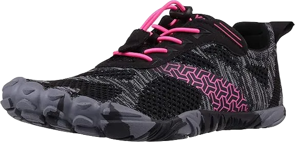
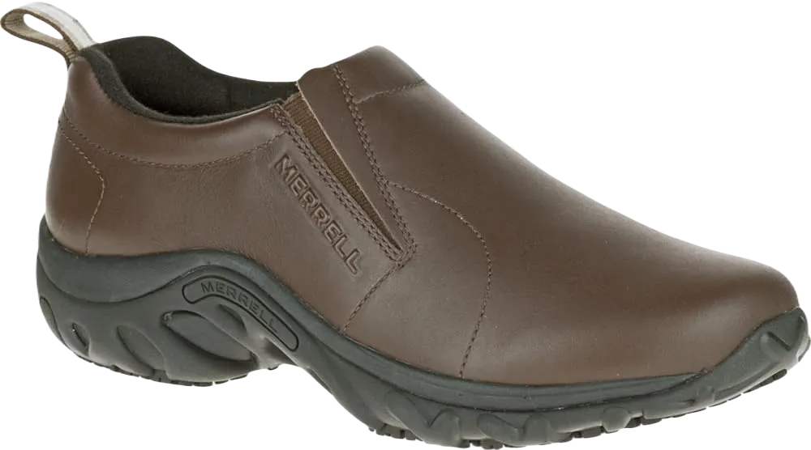
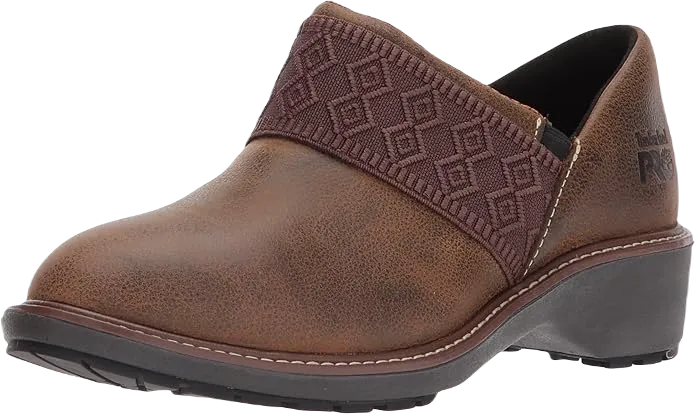
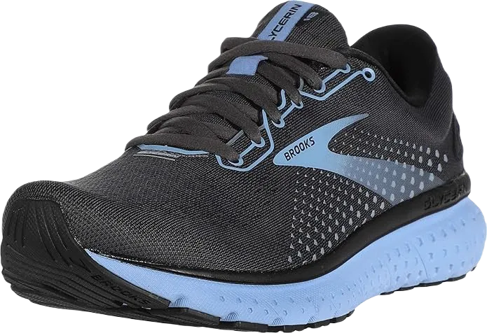

7 Best Shoes For Pharmacists In Reviewed in 2024
The best shoes for pharmacists are those designed for comfort, allowing you to navigate long shifts with ease, whether during the day or night.
Since pharmacists spend most of their time on their feet, choosing the right footwear is essential for ensuring both comfort and stability. Here are some of the most popular and highly recommended shoes currently available.
-
#1
BUNION SNEAKERS
Whether you're an experienced pharmacist, a beginner, or a student, the best shoes for pharmacists are those that are lightweight, flexible, and specifically designed to meet the demands of pharmacy-related work.
The following article lists some of the top footwear options suitable for pharmacists, ensuring that you can enjoy your long shifts in the pharmacy, day or night. Given that pharmacists spend the majority of their time on their feet, choosing the right shoes is essential for maintaining comfort and stability throughout the day.
Since pharmacists frequently engage in various tasks while standing or walking, having a comfortable shoe like Bunions Sneakers can be indispensable. These shoes often feature orthotic insoles designed to alleviate heel pain, while ergonomic outsoles help absorb shocks from movement, providing relief during busy shifts. With anatomical support systems in place, these shoes ensure that pharmacists can carry out their duties smoothly and efficiently. -
#2
SKECHERS GO WALK
.webp)
The Skechers Go Walk Joy Shoes are among the best offerings from Skechers, designed to be slip-resistant and lightweight. Constructed with a quality rubber sole, these shoes feature a textile upper that effectively shields your feet from various external factors, ensuring maximum comfort.
For pharmacy professionals who need footwear that supports prolonged standing, the Go Walk Joy Shoes are an excellent choice, equipped with the latest 5Gen cushioning technology. This innovative cushioning system helps absorb impact, making them suitable for long hours on your feet.
The exterior sole is crafted from high-quality rubber, contributing to the lightweight nature of the shoes. One of the standout features is their wide sole, which accommodates narrow feet comfortably. Additionally, the padded collar and laces provide a cushioned ride, while the rubber outsole ensures exceptional traction for all-day support. -
#3
SKECHERS SPORT WOMEN
.webp)
The next exceptional pair of shoes designed for pharmacists features a well-crafted rubber sole, ensuring durability and support. The lace-up design accommodates both extra-large and narrow feet, providing a comfortable fit for all. Made from 100% genuine leather, the upper is complemented by synthetic materials for waterproofing, making these shoes practical for various environments.
To deliver optimal cushioning, these shoes incorporate high-quality air cushions in the heel area. The double-layered insoles are designed to absorb impact, effectively distributing weight for added comfort. Their user-friendly design allows for easy wear and removal, thanks to the convenient cut and slip features.
Additionally, the tongue and collar of these Skechers Sport shoes are cushioned to mitigate the impact on your feet, ensuring a gentle feel throughout the day. The collar cushioning specifically addresses the pressure exerted by your body weight, providing exceptional comfort for pharmacists during long hours of work. -
#4
MERRELL JUNGLE MOC PRO
When it comes to purchasing shoes, the Merrell Jungle Moc Pro Slip Resistant is an excellent choice for pharmacists. These shoes are designed to absorb collisions and impacts effectively, thanks to their high-quality full-grain leather construction.
Both male and female pharmacists can enjoy fresh airflow while wearing these shoes, thanks to the breathable mesh lining. Their outstanding grip strength comes from the 100% rubber sole, which provides excellent traction and stability for walking.
Featuring a reliable and slip-resistant outsole, these shoes ensure that pharmacists can move safely while transporting medications. Instead of traditional leather, the upper design utilizes Nubuck leather, enhancing durability. Additionally, a porous lining prevents odors, keeping feet fresh whether you're in a clinic or outdoors. The slip-on design allows for quick and easy wear and removal, making them convenient for busy professionals. -
#5
ROCKPORT MEN’S EBBERSON LOAFER

The Rocport Ebberson loafer features a 100% soft leather upper, providing exceptional comfort that prevents blistering and impact pain, even with minimal contact. Its waterproof capabilities are attributed to this high-quality leather, ensuring your feet stay dry.
Equipped with a 100% rubber sole and EVA insole, these shoes offer a relaxed fit for all-day wear. The design incorporates evenly padded collars and soles for optimal interaction, enhancing overall comfort. Additionally, the tongue is also padded with rubber for extra support.
To promote airflow and keep your feet feeling fresh, the Rocport Ebberson loafer boasts a modern mesh and porous lining. This breathable design helps prevent odors, ensuring your feet stay comfortable throughout the day. The manufacturer has also thoughtfully included a slightly wider toe box, accommodating pharmacists who may experience discomfort from removing shoes. Plus, the removable soles make cleaning effortless, allowing for easy replacement with custom insoles for improved hygiene. -
#6
TIMBERLAND WOMEN’S PRO RENOVA
We hope you’re not surprised to see the Timberland Pro Slip-On featured on this list. While Timberland is renowned for its designer and outdoor footwear, it also ranks among the top brands for pharmacist shoes, catering to both men and women. The design of these shoes makes them particularly accessible for female pharmacists, allowing for easy on-and-off wear during busy shifts. Timberland PRO is crafted to ensure the safety of pharmacy professionals and other healthcare workers, providing protection against falling objects and chemical spills.
The shoes are made from 100% full-grain soft leather, which contributes to their impressive durability and waterproof capabilities. The rubber outsole is specifically designed for safe navigation on stone and marble floors, offering excellent traction and ensuring quality performance throughout the day.
The thoughtful design accommodates both narrow and wide feet, providing a comfortable walking experience for pharmacy experts. Additionally, the double-padded insole effectively absorbs impacts, enhancing overall comfort and support during long hours on your feet. -
#7
CUTE NURSING PHARMACIST TECHS
Next up are the nursing pharmacist tech shoes, designed for complete water resistance thanks to their porous manufactured materials. Pharmacists can confidently work on any type of floor, as the non-slip outsole provides exceptional safety and quality, making these shoes ideal for various tasks.
With their effective non-slip soles, these stylish nursing shoes can be worn even on completely wet surfaces without compromising safety. The design features an absorbent footbed specifically engineered to master water absorption, ensuring that the shoes maintain their water-resistant properties without hindering breathability.
This innovative footbed guarantees that pharmacy professionals’ feet remain dry for extended periods, supporting their ability to perform quality work without discomfort.